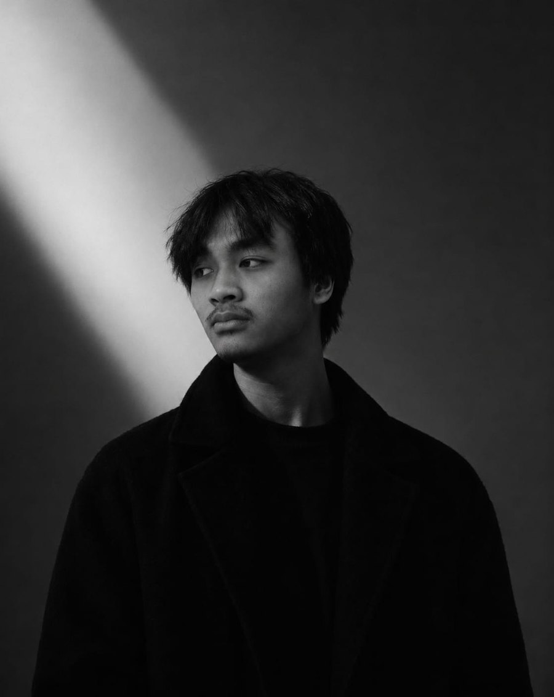

Shahrazan
Muhammad Arsyad
Saya seorang
Menerjemahkan ide menjadi pengalaman digital yang rapi, cepat, dan nyaman dipakai.

HTMLCSSJavaScriptGit & GitHubUI DesignResponsive DesignProblem Solving
01 — Tentang
Sedikit tentang saya
Halo, saya Shahrazan Muhammad Arsyad. Saya senang membangun hal-hal di web dan terus belajar agar hasil kerja saya semakin baik dari waktu ke waktu.
Saya terbiasa memikirkan sebuah produk dari sisi kebutuhan pengguna sampai tampilan akhirnya, dengan perhatian pada detail dan kerapian.
Saat ini saya terbuka untuk peluang baru, baik proyek, magang, maupun kerja sama.
- 2025 - SekarangUniversitas Budi LuhurProgram studi Sistem Informasi
- 2022 - 2025Madrasah Aliyah AnnajahJurusan IPS
02 — Kontak
Mari berbincang
Punya ide, peluang, atau pertanyaan? Hubungi saya lewat: